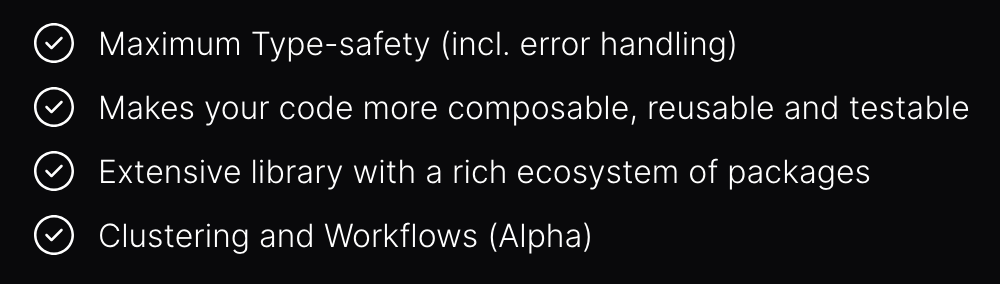
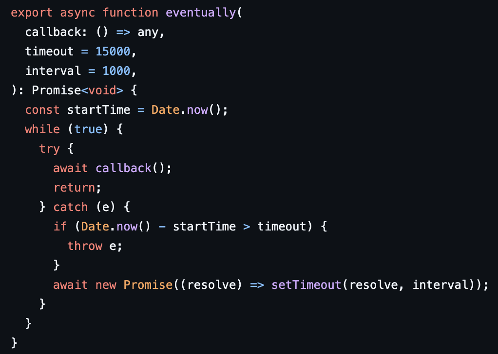
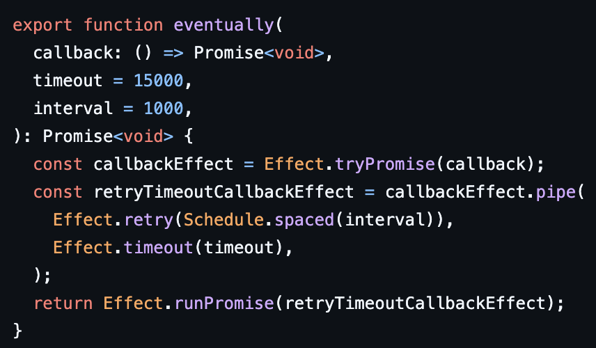
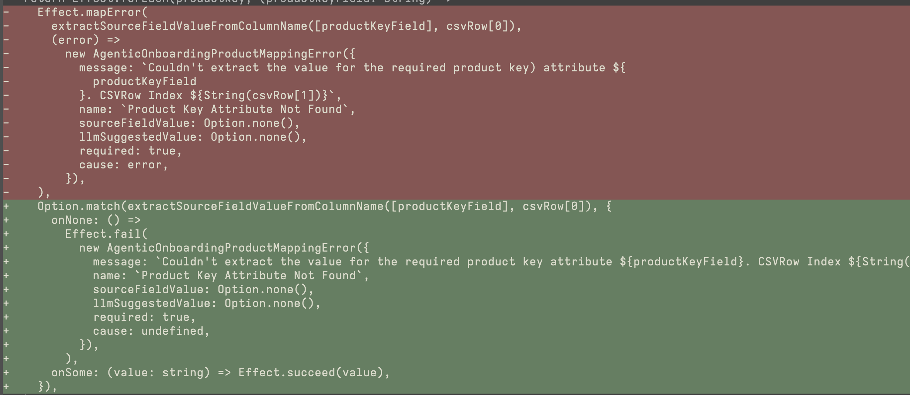

✅ If you are new to:
effect-ts❌ If you know
effect-ts Codeeffect-ts CodeDon't.
Better alternatives: Scala, Purescript, Haskell, F#…
In TypeScript, go for it

Exposes at type level computations with side effects
❌ Calling this is not the same as its return value/type
💔 Loss of referential transparency
function log(message: string): void {
console.log(`Amazing log ${message}`);
}
sync for SAFE synchronous computationimport { Effect } from 'effect';
function log(message: string): Effect.Effect<void> {
return Effect.sync(() => console.log(`Amazing log ${message}`));
}
Let's focus on something simpler first
Better model several common scenarios
More predictable results
Not only for side effects
import { Option } from "effect";
// Before: nullable indexing — easy to get wrong later
const rowRaw: string[] | undefined = csvRow[field];
// Often: throw/error here, or silently continue with undefined downstream
// Caller may forget checks; failures show up indirectly.
// After: absence is explicit at the type level
const row: Option.Option<string[]> =
Option.fromNullable(csvRow[field]);
// Caller must reduce the Option — harder to ignore
const mayUsername: string | undefined = "James";
const maySurname: string | undefined = undefined;
const fullName1 = `${mayUsername} ${maySurname}`;
console.log(fullName1); // "James undefined" — no compile error
// If you want to compose values but some are missing:
// - You can't safely resolve missing fields in one step
// - Composition is postponed until you've checked everything
// - Inference is brittle, especially across JS-heavy dependencies
import { Option } from "effect"
const maybeName: Option.Option<string> = Option.some("John")
const maybeAge: Option.Option<number> = Option.none()
const ageName : Option.Option<string> = Option.zipWith(maybeName, maybeAge, (name, age) =>
`${age} - ${name}`
)
// Since maybeAge is a None, the result will also be None
console.log(ageName);
Effect provides several composition patterns
The real benefits:
no side effects, primary types computations
┌───────┐ ┌───────┐ ┌───────┐ ┌───────┐ ┌───────┐ ┌────────┐
│ input │───►│ func1 │───►│ func2 │───►│ ... │───►│ funcN │───►│ result │
└───────┘ └───────┘ └───────┘ └───────┘ └───────┘ └────────┘
import { pipe } from "effect"
// Define simple arithmetic operations
const increment = (x: number) => x + 1
const double = (x: number) => x * 2
const subtractTen = (x: number) => x - 10
// Sequentially apply these operations using `pipe`
const result = pipe(5, increment, double, subtractTen)
console.log(result)
// Output: 2
If you want to transform the result of the computation.
Similar to Promise.then, but only with pure computations
// No side effects inside the "then"
fetch("https://example.org/products.json").then((product) => product.price);
let's see some examples
import { Option, pipe } from "effect";
const mappedOption: Option.Option<number> = pipe(
Option.some(42),
Option.map((x: number) => x * 2),
);
// { _id: 'Option', _tag: 'Some', value: 84 }
console.log(mappedOption);
// 84
console.log(Option.getOrElse(mappedOption, () => 69));
import { Effect, pipe } from "effect";
const mappedEffect: Effect.Effect<string> = pipe(
Effect.succeed("data"),
Effect.map((x: string) => `Awesome ${x}`),
);
// Awesome data
console.log(Effect.runSync(mappedEffect));
I don't care about your result
After that effect, do this
import { Effect, pipe } from "effect";
// Notice the return type!
const mappedEffect: Effect.Effect<void> = pipe(
Effect.succeed("data"),
// works on pure functions as well. Multiple overloads
Effect.andThen(() => Effect.sync(() => console.log(`Finished`))),
);
// Prints: Finished
// Returns: Undefined
console.log(Effect.runSync(mappedEffect));
zipRight Very similar to Promise.then
You can decide which value to keep and what to discard. Both Effects are performed
import { Effect, pipe } from "effect";
// Exact same example as before
const mappedEffect: Effect.Effect<void> = pipe(
Effect.succeed("data"),
Effect.zipRight(Effect.sync(() => console.log(`Finished`))),
);
console.log(Effect.runSync(mappedEffect));
pipe stays available for the next stepimport { Effect, pipe } from "effect";
const traced: Effect.Effect<string> = pipe(
Effect.succeed("data"),
Effect.tap(Effect.sync(() => console.log("In progress"))),
Effect.map((data: string) => `awesome ${data}`),
);
// In progress — log from tap runs first
// awesome data — final mapped value
console.log(Effect.runSync(traced));
Promise.then((v) => AnotherPromise)
import { Effect, pipe } from "effect";
const mappedEffect: Effect.Effect<void> = pipe(
Effect.succeed("data"),
Effect.tap(Effect.sync(() => console.log(`In progress`))),
Effect.flatMap((data: string) =>
Effect.sync(() => console.log(`awesome ${data}`)),
),
);
// Prints: In progress → awesome data → Finished
// Returns undefined
import { Effect } from "effect"
const program =
Effect.succeed(1).pipe(
Effect.flatMap(n1 =>
Effect.succeed(n1 + 1)
),
Effect.flatMap(n2 =>
Effect.succeed(n2 * 2)
),
// nested pipeline starts here
Effect.flatMap(n3 =>
Effect.succeed(n3).pipe(
Effect.flatMap(x =>
Effect.succeed(x + 10)
),
Effect.flatMap(x =>
Effect.succeed(x * 3)
),
Effect.flatMap(x =>
Effect.succeed(x - 5)
)
)
),
Effect.flatMap(n4 =>
Effect.succeed(n4 / 2)
),
Effect.flatMap(n5 =>
Effect.succeed(n5 + 7)
),
Effect.flatMap(n6 =>
Effect.succeed(`Final result: ${n6}`)
)
)
connectToDatabase()
.then((database) =>
getUsers(database)
.then((users) =>
getUserSettings(database)
.then((settings) =>
enableAccess(user, settings)
),
),
);
for {
_ <- logger.logInfo("Access DB")
database <- connectToDatabase()
_ <- logger.logInfo("Get Users")
users <- getUsers(database)
_ <- logger.logInfo("Get User Settings")
settings <- getUserSettings(database)
_ <- logger.logInfo(s"Enable Access to $user")
result <- enableAccess(user, settings)
} yield result
do
logInfo logger "Access DB"
database <- connectToDatabase
logInfo logger "Get Users"
users <- getUsers database
logInfo logger "Get User Settings"
settings <- getUserSettings database
logInfo logger $ "Enable Access to " ++ show user
return (enableAccess user settings)
async function run() {
logger.logInfo('Access DB');
const database = await connectToDatabase();
logger.logInfo('Get Users');
const users = await getUsers(database);
logger.logInfo('Get User Settings');
const settings = await getUserSettings(database);
logger.logInfo(`Enable Access to ${user}`);
const result = await enableAccess(user, settings);
return result;
}
// Each step is an effect
Effect.gen(function* () {
yield* logger.logInfo('Access DB');
const database = yield* connectToDatabase();
yield* logger.logInfo('Get Users');
const users = yield* getUsers(database);
yield* logger.logInfo('Get User Settings');
const settings = yield* getUserSettings(database);
yield* logger.logInfo(`Enable Access to ${user}`);
const result = yield* enableAccess(user, settings);
return result;
})
allforEachwhen - unlesswhenEffect - unlessEffecttapError
both
…
The core datatype for impure computations


pipe(
...
Stream.zipWithIndex,
// Stream.map(
// ([record, rowIndex]: [Record<string, string>, number]): CsvRow => [record, rowIndex],
// ),
...
)
Option.match unnecessaryElementNotFound error lost
